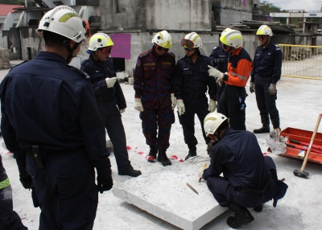
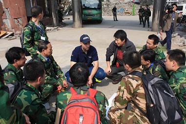

Building the first tier of local capability involves the training and development of existing local emergency services and community responders to meet the needs of the affected population at the onset of the incident. Termed 'USAR First Responders', their role at the initial phase of an incident is that of:
- Assessing the nature and scale of the incident
- Rescue and basic casualty care in the initial stages of a collapse incident
- Providing information to domestic decision-makers about the event
- Requesting the appropriate resources required to successfully complete the rescue phase
First Responder Networks would be most effective in areas where no organised USAR capability exists, as well as areas where any USAR response from structured teams may be delayed. It is envisaged that USAR First Responders will typically be personnel working in the local community or staff of local government organisations tasked with emergency management or response. For example; local police, medical staff or fire-fighters, government workers (including civil protection) or members of volunteer organisations.
To assist in the development of USAR First Responders, INSARAG has developed the First Responders Training Package. More information regarding INSARAG First Responder Training can be found in the link below.
First Responders Training Package
INSARAG First Responder Training Programme - v. Feb 2015
First Responders Training Package (Presentations)
 